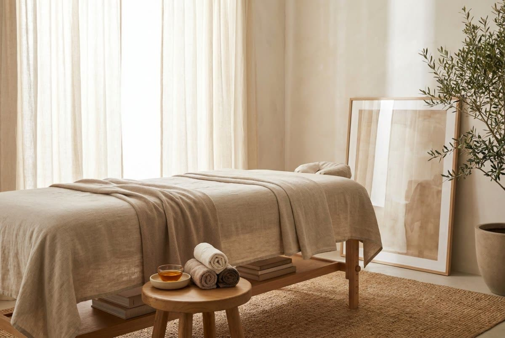
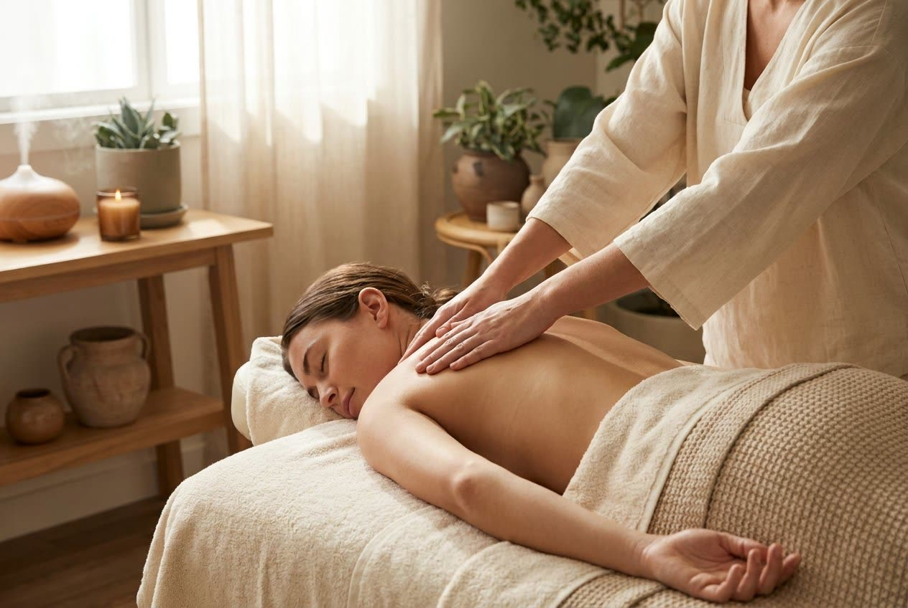
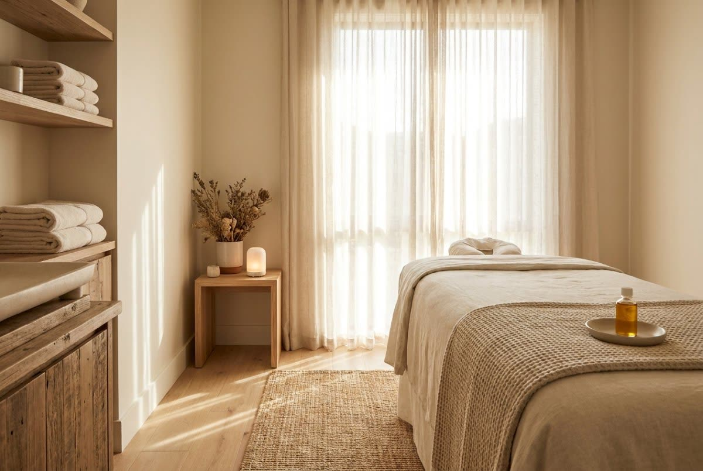

Zabiegi · Poznań
Od klasyki po rytuały tajskie i pielęgnacyjne masaże twarzy. Każdy zabieg zaczynamy od rozmowy, żeby dobrać technikę, tempo i nacisk do tego, czego potrzebujesz właśnie dziś.
 Masaże ciała
Masaże ciała
Uniwersalny masaż całego ciała — rozluźnia mięśnie, poprawia krążenie i przywraca lekkość.

Masaże ciałaUkierunkowana praca z napięciem i bólem — wsparcie dla kręgosłupa, karku i przeciążonych partii.

Masaże ciałaSpokojny, głęboko odprężający rytuał z naturalnymi olejkami, który wycisza ciało i umysł.
 Masaże ciała
Masaże ciała
Intensywna praca na głębszych warstwach mięśni i powięzi — dla uporczywych napięć.

Masaże ciałaDelikatny masaż wspierający przepływ limfy, redukujący obrzęki i uczucie ciężkich nóg.
 Masaże ciała
Masaże ciała
Modelujący masaż wspierający ujędrnienie skóry i redukcję cellulitu.
Specjalistyczny masaż modelujący sylwetkę, wspierający ujędrnienie i redukcję tkanki tłuszczowej.
Ciepło bazaltowych kamieni rozluźnia mięśnie głębiej i szybciej niż same dłonie.
Masaże ciała
Dwóch terapeutów pracujących w jednym rytmie — najgłębsze odprężenie w krótkim czasie.
 Masaże ciała
Masaże ciała
Dwa stoły w jednym gabinecie — wspólna chwila oddechu dla pary lub przyjaciółek.
Masaże tajskie
Tradycyjna praca na macie — rozciąganie, ucisk punktów i praca z oddechem.
Refleksologiczna praca na stopach i podudziach — ulga po całym dniu na nogach.
Masaże twarzy
Japoński lifting bez skalpela — intensywny masaż twarzy, szyi i dekoltu.
Modelowanie owalu twarzy i wygładzenie napięć mimicznych.
Masaże twarzy
Praca od wewnątrz jamy ustnej — rozluźnia żuchwę i mięśnie odpowiedzialne za bruksizm.
Masaże twarzy
Pielęgnacyjny masaż twarzy poprawiający kondycję, nawilżenie i wygląd skóry.
Nie wiesz, co wybrać?
Napisz lub zadzwoń — zapytamy o kilka rzeczy i zaproponujemy masaż, którego naprawdę potrzebujesz.